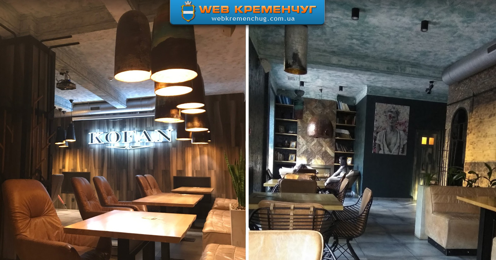

It is not situated inside of Kremenchuk, but it is not far from our city. In our opinion, the best restaurant among all in Kremenchuk region.Located on the bank of Kremenchuk Sea, absolutely worth visiting.
A cheap, comfortable,peaceful cafe in the center of the city. A best place to drink coffee and eat waffles. On Friday's evenings a live music is performed.

If you didn't like Celentano, or just with to diversify your meal, visit this restaurant and eat some pizza here!
Nature
What natural landscapes can you see in Kremenchuk? What to visit to enjoy your time here? Well, you may start with visiting Park of Peace to see a landscape of all Kremenchuk, continue with Miskyi Sad with fragrant swans and lake, and finish with a bank of Dnipro river. All of these places are must see in Kremenchuk. Though, we have much more to see. Click here for more ->
Famous people in Kremenchuk
Our city is full of famous people, whose lives were connected with Kremenchuk. In different times we had such events related to famous people:
Kremenchuk was visited by Kotlyarevskyi, Lysenko, Gogol, Pushkin, Kateryna II
Taras Shevchenko visited our city and wrote a poem about it
Kremenchuk was a place to work in for Vernadskyi, Utyosov, Maiboroda
If till this point you thought about our past only, now lets envision some future of Kremenchuk.
A main news for Kremenchuk nowadays is a news that new bridge is going to be built on the Dnipro river. Building works have already started in 2021, so hopefully in next years our city will get a new vital infrastructural object. Works are performed with help of Turkish constructors.
If you want to read about other news and future plans of Kremenchuk, feel free to read it from our newspaper